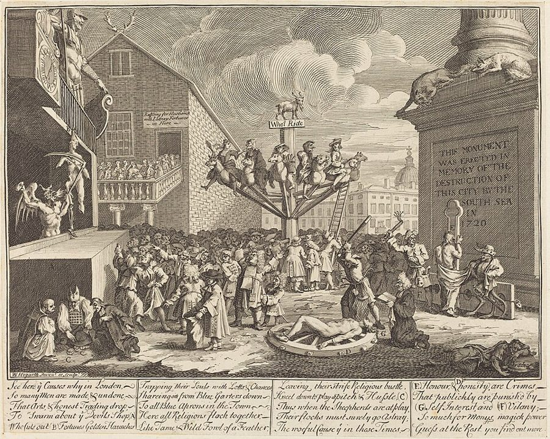

这一页在做什么
君主的第三项义务，是办那些私人办了不合算、社会却离不开的公共工程。这一页讲为商业服务的那一类：道路、桥梁、运河、港口，再到保护远洋贸易的堡垒和使节。斯密不大争该不该办，他争的是谁出钱、谁来管。后半页是 1784 年第三版加的，他借这个话头把英国的外贸公司挨个审了一遍，最后落到东印度公司。读的时候抓两条线：「谁用谁付钱」的道理；拿别人的钱做生意的董事会怎样。
他想证明什么
页 22 的第三项义务，理由是私人算不过来的事由国家来办。斯密在这里马上补了一句：国家负责，不等于国库掏钱。这一页前半要证明的是，为商业服务的公共工程，大多能让用的人付钱：车按重量、船按吨位交过路费、船闸费、港口费，谁磨损得多谁多付；靠收费养的路，也只会修在真有生意的地方。收不上费的，交给地方去办，别交给好大喜功的中央。后半页是斯密在 1784 年的第三版里加的。保护远洋贸易要修堡垒、派使节，议会常把这份差事连同专营权一起交给商人公司。斯密逐家检查：受管制公司像放大了的行会；股份公司的董事管的是别人的钱，没有专营权就竞争不过私商，有了专营权又把贸易做窄；东印度公司又做生意又统治印度，两样都没做好。
读法：§4 先读，不到六百词。有空读 §1 谁用谁付钱、§6 东印度公司、§7 垄断只能给几年。§2、§3、§5 是收费公路的提案、各家公司的章程和账目，可以跳过。
斯密说，离了专营权，股份公司只办得好银行、保险、运河、自来水这类能按章办事的生意（第 122 段）。这一条后来被现代公司的历史推翻了，见「今天怎么看」。
斯密落在哪：为商业服务的工程，能让用的人付钱就让他们付，地方的事地方办。替国家保护贸易的商人公司，长远看不是累赘就是无用。新开一门冒险贸易，可以给几年垄断，像专利和版权；期满就该放开。股份公司离了专营权，他认为只适合四种按章办事的生意。
分节地图
这一页是卷五第 1 章第三部分的第一项，本站切成 7 节。粗体是本站起的节名；「杨译里找」后面是杨译里这一节开头附近的小标题或第一句；灰色的英文是原文这一节开头的几个词。标「先读」的是最短读法。
- 谁走路谁付钱第三部分 论公共工程和公共机构的支出THE third and last duty of …第 70 段给第三项义务下定义。第 75 段说按载重收费最公平；第 76 段让富人的懒和虚荣替穷人补贴运费；第 77 段通往贵族别墅的大路；第 78 段兰格多克运河。
- 政府该不该经营收费公路有人提出，政府应管理收税公路并从而获得收入The money levied at the different turnpikes …有人提议政府接管收费公路当财源，斯密给了三条反对理由，第 84 段说挪作他用就成了压在穷人身上的税。第 88 段骂传教士那句很毒；其余是英法细节，可以跳过。
- 堡垒、使节和受管制公司为便利特殊商业部门所必需的公共工程和机构THE object of the public works …1784 年补写的部分从这里开始。堡垒和使节怎么交到商人公司手里，各家受管制公司的入会费和章程。第 99 段「只是无用，已是最高的赞美」值得一看，其余可以跳过。
- 拿别人的钱做生意股份公司与私人合伙不同Joint stock companies, established either by …全页的先读，不到六百词。股份公司和合伙的两点不同：股份能转让、责任有限。第 108 段：董事管的是别人的钱。
- 非洲、哈得孙湾和南海公司有些股份公司有专营特权，有些没有The Royal African Company, the predecessors …皇家非洲公司、哈德逊湾公司、南海公司的盈亏账，数字多半取自 Anderson 的《商业史》。结论和 §4 一样，可以跳过；南海公司见故事。
- 东印度公司：坏商人也是坏君主旧东印度公司不能经受竞争The old English East India Company …第 116 段一段两千七百词的公司简史。公司抱怨竞争让英国的印度货太便宜，斯密一句话翻过来；花一千镑买一张「任命掠夺者」的票。第 118 段写着「现在（1784）」。
- 垄断只能给几年给予股份公司以暂时性的垄断权有时可能是合理的，但永久性垄断权是一种荒谬的赋税When a company of merchants undertake, …第 120 段把暂时的垄断比作专利和版权；第 121 段莫尔莱神父的 55 家公司；第 122–130 段立了设股份公司的三个条件，可以拿今天的公司去套。
先用中文过一遍：这一页的概念
这一页用到的三个概念。讲的是概念本身；每块的「今天」说今天怎么看它。前面讲过的天然自由的制度、同业公会、专营公司在这一页还会出现。
§1公共工程 public works and public institutions
对一个大社会好处极大，可是让任何一个人或几个人去办都收不回成本，所以没法指望私人去办的工程和机构（第 70 段）。斯密把它分成三块：便利商业的（道路、桥梁、运河、港口，还有铸币和邮局），教育青年的（页 25），教育全体人民的（宗教，页 26）。要分清两件事：「该由国家负责」和「该由国库出钱」。斯密的标准是私人办了不合算，不是今天说的公共品；道路和运河设个卡就能收费，他正是要靠收费把不付钱的人挡在外面。
今天：今天叫基础设施和公共服务。Samuelson 1954 年定义的公共品，是一人用了不妨碍别人、又挡不住不付钱的人用的东西；能设卡收费的路和运河不在此列，正好适合斯密的办法。
在这一页：第 70–71 段下定义，第 72–90 段讲道路运河。下半页的堡垒和使节，是为某一门贸易办的公共工程。
§1使用者付费 tolls and other particular charges
公共设施的钱，向用它的人收，不从一般税收里出。斯密说，车按重量、船按吨位交钱，正好按它们磨损了多少来付，「似乎很难想出更公平的办法」（第 75 段）。这笔钱名义上是赶车的交，最后摊进货价由买主付；可路修好了，运费省下的比过路费多，所以买主付出的只是他得到的好处的一部分。好处还有一条：靠收费养的路只会修在真有生意的地方，修多气派也得看生意付不付得起（第 77 段）。他也看到了坏处：过路费按重量不按价值收，要是挪去填国库，就成了主要落在穷人身上的税（第 84 段）。译本：「通行税」，其实是一笔费，不是一般的税。
今天：收费公路、港口费、拥堵费都是这个思路。新加坡 1975 年、伦敦 2003 年、斯德哥尔摩 2007 年、纽约 2025 年起对进城的车收拥堵费；最早系统提倡的是 1996 年诺贝尔奖得主 Vickrey。
在这一页：第 73–77 段立论，第 79 段讲公路收费为什么不能交给私人，第 83–85 段反对拿它当财源。第 93 段把同一个道理用到保护远洋贸易上。
§4股份公司 joint stock company
许多人把钱凑成一个大本钱，交给董事会经营。斯密说它和私人合伙有两点不同（第 106–107 段）。合伙人可以通知退伙、把自己那份本钱抽走，但不能随便把份额转给外人；股东不能向公司要回本钱，却可以不经别人同意把股份卖掉，股份值多少看市价。合伙人要拿全部家产担合伙的债；股东只赔到自己那份为止。要留意，斯密说的股份公司，是国王特许或议会立法设立的公司（Cannan 注），那时的英国人还不能像今天这样登记一下就开一家有限公司。至于受管制公司，会员各用各的本钱做生意，斯密说它像行会，不是这里说的股份公司。
今天：今天的股份有限公司就是它的后代。英国 1844 年起登记就能成立公司，1855–1856 年起普遍有限责任。斯密说的「管别人的钱」，今天叫委托—代理问题。
在这一页：第 105–108 段先读；第 109–119 段一家家对账；第 122–130 段是他认为适合股份公司的四种生意。
故事和背景
这一页里的故事和 18 世纪的东西，按在书里出现的顺序排。
§1里格的运河
第 78 段：兰格多克运河从图卢兹一直通到地中海，法国国王和兰格多克省花了一千三百多万利弗（斯密折合九十多万镑；今天的史书说总花费在一千七八百万利弗）。修成后，最稳妥的维护办法是把通行费送给设计、主持工程的 Riquet（杨译作里格），他的子孙靠这笔费成了大户，自然用心维修。斯密没讲的是这位工程师的结局：他是靠包收盐税发家的，自己掏了约两成的钱，1680 年秋天去世，几个月后运河才通航；他的家族为这条河欠下的债，一百多年后才还清。后来的事倒像是替斯密补了个反例：1858 年，拿破仑三世把运河租给南方铁路公司四十年，铁路公司偏袒自家的火车，抬高运河的运价，河上的生意越来越冷清。斯密的道理是：管理者的收入系在运河上，才会好好修它。1897 年法国政府买下运河，1996 年它成了世界遗产。
§2「愚蠢说谎的传教士」
第 87–88 段斯密拿法国和中国作对照。法国的大驿道由国王派的总督管，修得很漂亮，有的省比英格兰的收费路还好；可乡间的小路没人管，重车过不去，有的地方骑马都危险。他的解释很刻薄：宫廷里骄傲的大臣喜欢修贵族们看得见、会夸奖的大工程，一大堆只是有用、谁也不会多看一眼的小工程，配不上他的注意。中国的道路运河据说比欧洲的强得多，斯密不大信：传到欧洲的报道，多是没见过世面、见什么都惊奇的旅行者写的，常常出自「愚蠢说谎的传教士」。不过他也给了个说得通的理由：亚洲君主的收入主要来自土地税，收成好坏直接关系到他的钱袋，所以他真有动力修路通河。他说的中国全凭二手报道，自己也一路写着「据说」。
§5南海公司的年度船和捕鲸

第 108 段说，南海公司的营业资本一度超过三千三百八十万镑。它的股票投机，斯密只用一句话打发：其中的欺诈和荒唐人所共知，不必在这里细说。1720 年它的股价从年初一百多镑冲到夏天将近一千镑，九月崩盘，年底跌回一百多镑。斯密只算它的正经生意：《乌得勒支条约》给了它往西属美洲运送非洲奴隶的专营权，作为补偿，每年还能派一艘船去那里做买卖。这艘年度船走了十趟，据说只有 1731 年那一趟赚了钱，斯密怀疑钱多半被公司自己的代理人捞走了，据说有人一年就发了大财。1724 年它又去格陵兰捕鲸，八趟只赚了一趟，连本带息亏了二十三万七千多镑；Cannan 查了出处，八趟其实趟趟都赔。到 1748 年，它彻底不做生意了。
§6东印度公司：抱怨便宜，买票任命掠夺者
第 116 段开头是一场竞争：1698 年议会为了借两百万镑，另立了一家新东印度公司，新旧两家加上几个私商抢着做生意，据说差点把两家都毁了。1730 年公司向议会诉苦：那几年印度的货被抬得太贵，英国的货又被压得太便宜。斯密说，这些「惨状」正是消费变便宜、生产受鼓励，而这两件事恰恰是政治经济学最该促成的。公司后来在印度打仗、收税、统治一方，1773 年却差点破产，要向政府借钱。议会把有投票权的股份门槛提到一千镑，斯密说，有人买这一千镑的股票只为一张票：它让人分不到印度的赃，却能分到任命掠夺者的权。第 118 段写着「现在（1784）」：公司对海德·阿利的入侵毫无准备，又要政府救命。同一年议会通过 Pitt 的《印度法》，设立监督委员会管它；1773 年的茶叶法、1813 年开放印度贸易，见页 20。1858 年统治权收归王室，1874 年公司解散。
原典：斯密的原话
这本书是公版书，下面整段放斯密的原文，配本站的白话译。灰字说它在杨译的哪里，最后一行是这段里今天容易读错的 18 世纪词。
§4别人的钱
第 108 段的后半，公司治理研究最常引的一段话，最后两句要连着读。杨译的小标题错后了一段，这段排在这种公司由董事管理，他们是疏忽和浪费的这个小标题的前面。
The directors of such companies, however, being the managers rather of other people’s money than of their own, it cannot well be expected, that they should watch over it with the same anxious vigilance with which the partners in a private copartnery frequently watch over their own. Like the stewards of a rich man, they are apt to consider attention to small matters as not for their master’s honour, and very easily give themselves a dispensation from having it. Negligence and profusion, therefore, must always prevail, more or less, in the management of the affairs of such a company. It is upon this account that joint stock companies for foreign trade have seldom been able to maintain the competition against private adventurers. They have, accordingly, very seldom succeeded without an exclusive privilege; and frequently have not succeeded with one. Without an exclusive privilege they have commonly mismanaged the trade. With an exclusive privilege they have both mismanaged and confined it.
本站译：可是，这种公司的董事，经手的与其说是自己的钱，不如说是别人的钱，所以很难指望他们像私人合伙的伙伴照看自家的钱那样，提心吊胆地盯着它。他们像富人家的管家，觉得在小事上费心有失主人的体面，很轻易就给自己免了这份心。因此，这种公司的事务，总免不了或多或少的疏忽和挥霍。正因为这样，做外贸的股份公司很少竞争得过私人商人。所以，它们没有专营权就很少成功，有了专营权也常常不成功。没有专营权，它们通常把生意做坏；有了专营权，它们把生意做坏，还把它做窄。
注意限定词：疏忽和挥霍是「或多或少」，失败是「很少成功」「通常做坏」。最后两句说明，斯密反对的是股份公司加上专营权。1976 年 Jensen 和 Meckling 那篇代理成本的经典论文，就拿这段话开头。
- adventurers出钱冒风险做生意的人，这里指私人商人，不是冒险家
- profusion挥霍、大手大脚
- copartnery合伙
- dispensation豁免，给自己免了这份差
§6公司诉的苦，正是政治经济学的目标
第 116 段中间，斯密的一个漂亮翻转。在杨译旧东印度公司不能经受竞争这个小标题下面那一大段里，讲 1698 年新旧两家公司竞争的地方。
In India, they said, it raised the price of goods so high, that they were not worth the buying; and in England, by overstocking the market, it sunk their price so low, that no profit could be made by them. That by a more plentiful supply, to the great advantage and conveniency of the public, it must have reduced, very much, the price of India goods in the English market, cannot well be doubted; but that it should have raised very much their price in the Indian market, seems not very probable, as all the extraordinary demand which that competition could occasion, must have been but as a drop of water in the immense ocean of Indian commerce. The increase of demand, besides, though in the beginning it may sometimes raise the price of goods, never fails to lower it in the long run. It encourages production, and thereby increases the competition of the producers, who, in order to undersell one another, have recourse to new divisions of labour and new improvements of art, which might never otherwise have been thought of. The miserable effects of which the company complained, were the cheapness of consumption and the encouragement given to production, precisely the two effects which it is the great business of political œconomy to promote.
本站译：他们说，在印度，竞争把货价抬得太高，高得不值得买；在英国，货堆满了市场，价钱压得太低，一点利润也赚不到。供应多了，英国市场上的印度货必定便宜了许多，这对公众大有好处，大概没人会怀疑；可要说它把印度那边的货价抬高了许多，就不太可能，因为这点竞争多出来的需求，放进印度那片汪洋般的商业里，不过是一滴水。况且需求增加，开头也许有时会抬高货价，长远来看却总会把它压低：它鼓励生产，生产的人多了，就得互相压价，于是想出新的分工、新的技术改进，这些要不是被逼着，也许永远不会有人想到。公司抱怨的那些惨状，就是消费变便宜了、生产受鼓励了，而这两件事，恰恰是政治经济学的头等大事要去促成的。
这是页 21「消费是生产的唯一目的」的一个现成例子。「长远来看总会把价格压低」这句说满了：土地、稀有的矿这类多不出来的东西，需求多了就是会贵。
- art技艺、工艺，不是艺术
- political œconomy政治经济学，研究怎样让一国富裕的学问
- conveniency便利、好处
§7新机器和新书
第 120 段的前半，常被忽略：斯密明确赞成有期限的垄断，拿它比作专利和版权。在杨译给予股份公司以暂时性的垄断权有时可能是合理的，但永久性垄断权是一种荒谬的赋税这个小标题的前面一段。
When a company of merchants undertake, at their own risk and expence, to establish a new trade with some remote and barbarous nation, it may not be unreasonable to incorporate them into a joint stock company, and to grant them, in case of their success, a monopoly of the trade for a certain number of years. It is the easiest and most natural way in which the state can recompense them for hazarding a dangerous and expensive experiment, of which the public is afterwards to reap the benefit. A temporary monopoly of this kind may be vindicated upon the same principles upon which a like monopoly of a new machine is granted to its inventor, and that of a new book to its author. But upon the expiration of the term, the monopoly ought certainly to determine; … and the trade to be laid open to all the subjects of the state. By a perpetual monopoly, all the other subjects of the state are taxed very absurdly in two different ways; first, by the high price of goods, which, in the case of a free trade, they could buy much cheaper; and, secondly, by their total exclusion from a branch of business, which it might be both convenient and profitable for many of them to carry on.
本站译：一伙商人自担风险、自掏腰包，要和某个遥远的未开化国家开辟一门新贸易，那么把他们组成一家股份公司，并且在他们成功之后给他们若干年的独家经营权，也许并非没有道理。国家要报答他们冒险做了一场又危险又费钱的试验，而好处日后归公众享有，这是最省事、最顺理成章的办法。这种暂时的垄断，和把一台新机器的独家权利给发明人、把一本新书的独家权利给作者，可以用同样的道理来辩护。可是期限一到，垄断就一定该结束，……这门生意要向全体国民放开。要是垄断永远不结束，其他所有国民就等于被荒唐地征了两道税：一道是货价高，要是贸易自由，他们本来能便宜得多地买到；另一道是他们被整个挡在一门生意外面，而对他们中的许多人来说，做这门生意本来既方便又有利可图。
省略的那半句说，期满后堡垒交还政府，由政府按价补偿公司。「也许并非没有道理」是斯密很谨慎的说法；他心里的例外，限于新开的、危险的远方贸易。
- barbarous未开化的，18 世纪的说法，今天不这样称呼别的民族
- determine（期限、权利）终止，不是「决定」
- incorporate特许成立为法人团体
今天怎么看
这一章的主要说法和今天的判断。每条标签判的是那条论点，五种标签的意思：
- 成立今天的经济学和证据支持这句话。
- 部分成立大方向对，细节或适用范围要改。
- 过时说的是 18 世纪的世界，当时也许对，今天的制度和技术已经变了。
- 被推翻后来的经济学或证据说明它错了。
- 有争议经济学界至今没有定论，两边各有代表性的研究。
道路、桥梁、运河、港口，大多可以按使用量向使用者收费，这样只会修在需要的地方
今天看，这条成立：收费路、港口费、拥堵费都是这个办法。斯德哥尔摩 2006 年试行拥堵费，收费时段进城的车少了约两成，后来经公投保留下来。斯密的「大多」也留有余地：乡间小路收不上费，他让地方税来养（第 89 段）。
§1 第 73–77 段股份公司的董事管的是别人的钱，难免或多或少地疏忽和挥霍
今天看，这条成立，而且是一门学问的起点：Berle 和 Means 1932 年讲所有权和经营权分离，Jensen 和 Meckling 1976 年的代理成本理论直接拿这段话开头。高管薪酬挂钩股价、独立董事、审计，都是为了对付这个问题。
§4 第 108 段离了专营权，股份公司只办得好银行、保险、运河、自来水这类能按章办事的生意
斯密说得留了余地（「似乎」，「我想不起别的」），可今天看，这条被推翻了。理由见下面的对照卡。
§7 第 122–130 段新开的冒险贸易可以给有期限的垄断，像专利和版权；永久垄断等于向全体国民征两道税
今天看，「有期限可以、永久不行」成立：英国 1624 年起发明专利限 14 年，1710 年的版权法给新书 14 年，今天专利一般 20 年。期限多长才合适仍有争论：美国 1998 年把版权延长到作者死后 70 年，1928 年的米老鼠动画 2024 年才进入公有领域；少数经济学家如 Boldrin 和 Levine 2008 年更主张专利弊大于利。
§7 第 120 段书里的说法：离了专营权，股份公司只办得好银行、保险、运河、自来水这类能按章办事的生意
- 书里
- 第 120 段：没有垄断，股份公司「从经验看似乎」做不长外贸，因为买进卖出、盯着行情是一场打不完的仗，董事撑不住。第 122 段：只有业务能化成「常规」的生意，它才「似乎」办得成，举了四种；第 130 段说除此之外他想不起别的。
- 当时
- 1720 年的《泡沫法》规定，没有特许状不得设立股份公司；斯密见到的股份公司，多是靠特许和专营权吃饭的老牌外贸公司，南海公司的泡沫也还没被人忘掉。
- 今天
- 英国 1825 年废除《泡沫法》，1844 年起登记就能设公司，1855–1856 年普遍有限责任。此后铁路、钢铁、化工、汽车、电脑，最不「按章办事」的行业恰恰由股份公司办起来，而且多半没有专营权。斯密低估了后来长出来的约束：股票市场、并购、审计、经理人市场。他把问题看对了，把结局看错了。核对于 2026-10。依据：英国公司法史（Joint Stock Companies Act 1844、Limited Liability Act 1855、Joint Stock Companies Act 1856）；Jensen & Meckling, Theory of the Firm, Journal of Financial Economics, 1976。
「谁用谁付钱」能走多远：灯塔的故事
主流看法：经济学教科书常拿灯塔当公共品的标准例子：船从旁边经过，收不了钱，只能由国家办。Samuelson 就这样用过它。
斯密的看法：能向使用者收费的，就收（第 73–77 段）；只惠及一地的，地方出钱（第 89 段）；收费权不能随便给私人，公路收费交受托人管（第 79 段），受托人乱收，要靠议会慢慢纠正（第 80 段）。
本站的评论：Coase 1974 年翻了英国的档案，发现许多灯塔是私人建的，靠在港口向进港的船收「灯塔费」，正是斯密的路子。批评他的人指出，这笔费靠王室特许强制征收，算不得纯粹的市场。两边其实说出了同一件事：收费可以替代税收，但收费权要国家给、也要国家管，否则就成了斯密在 §3 里骂的那种专营。今天的收费公路和公私合营项目，也是在这根钢丝上走。
本站的总体看法：§4 一定要读，第 108 段是公司治理最早也最好的一段描述。§1 收费的道理今天照样管用，§6 的东印度公司故事最好看。读第 122 段时记住，斯密看对了董事的毛病，却低估了人们后来想出的办法。
精彩回顾
隔几周回来时看这里。想不起来，点节号回到那一节。
一句话：公共工程能让用的人付钱就让他们付；拿别人的钱做生意的董事，难免疏忽和挥霍。
斯密建议豪华马车按重量多交过路费，这样富人的懒和虚荣，就轻轻松松替穷人补贴了重货的运费。
§1董事像富人家的管家，觉得在小事上费心有失体面。没有专营权，生意做坏；有了专营权，做坏还做窄。
§4有人买一千镑东印度公司股票只为投票：分不到印度的赃，却能分到任命掠夺者的权。
§6新开的冒险贸易可以给几年垄断，道理同专利和版权；期满必须放开，永久垄断等于向国民征两道税。
§7